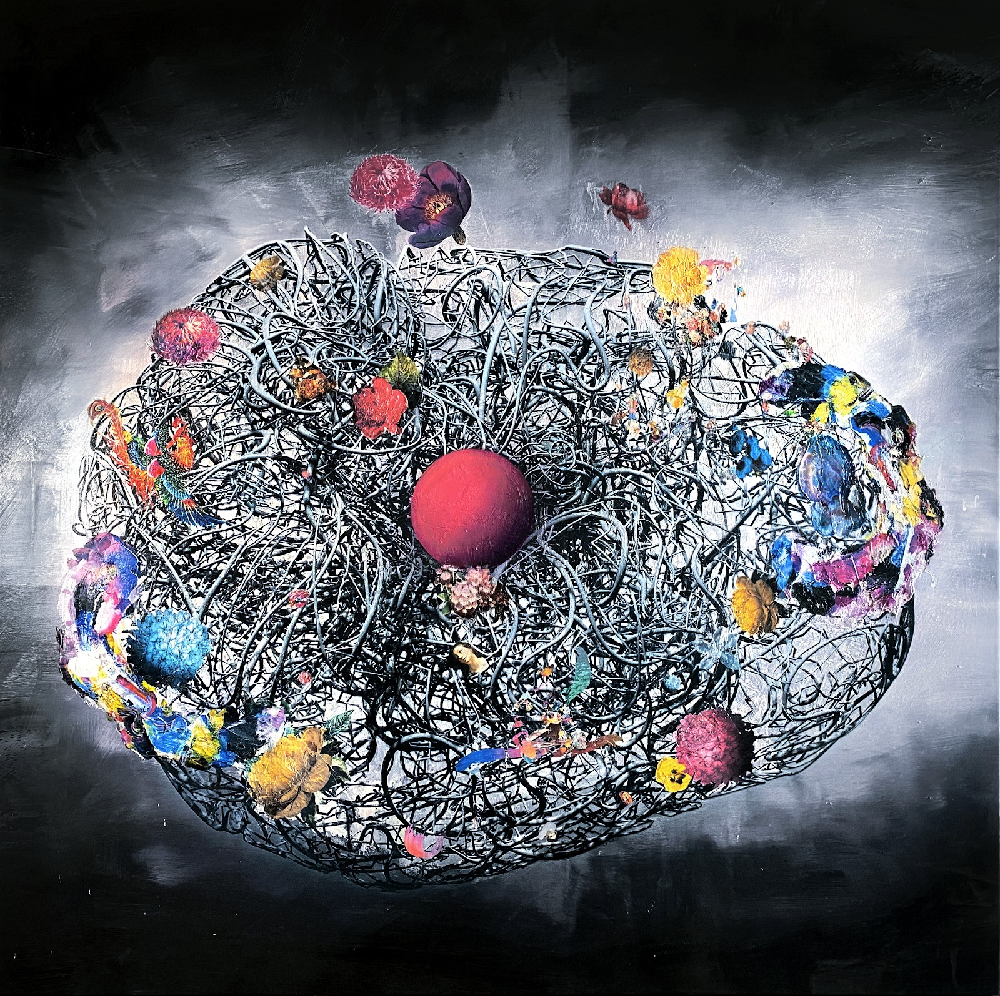
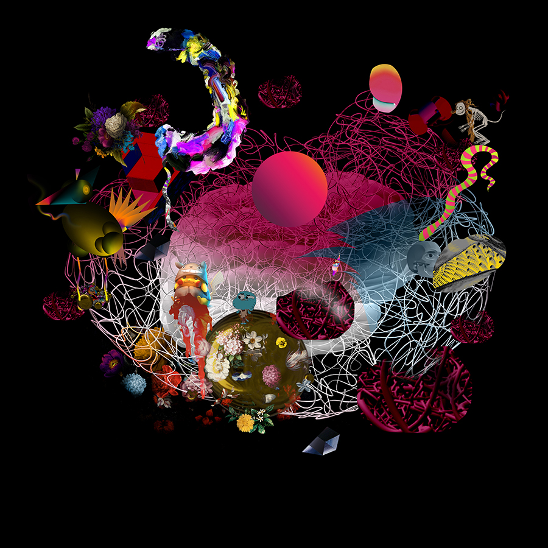
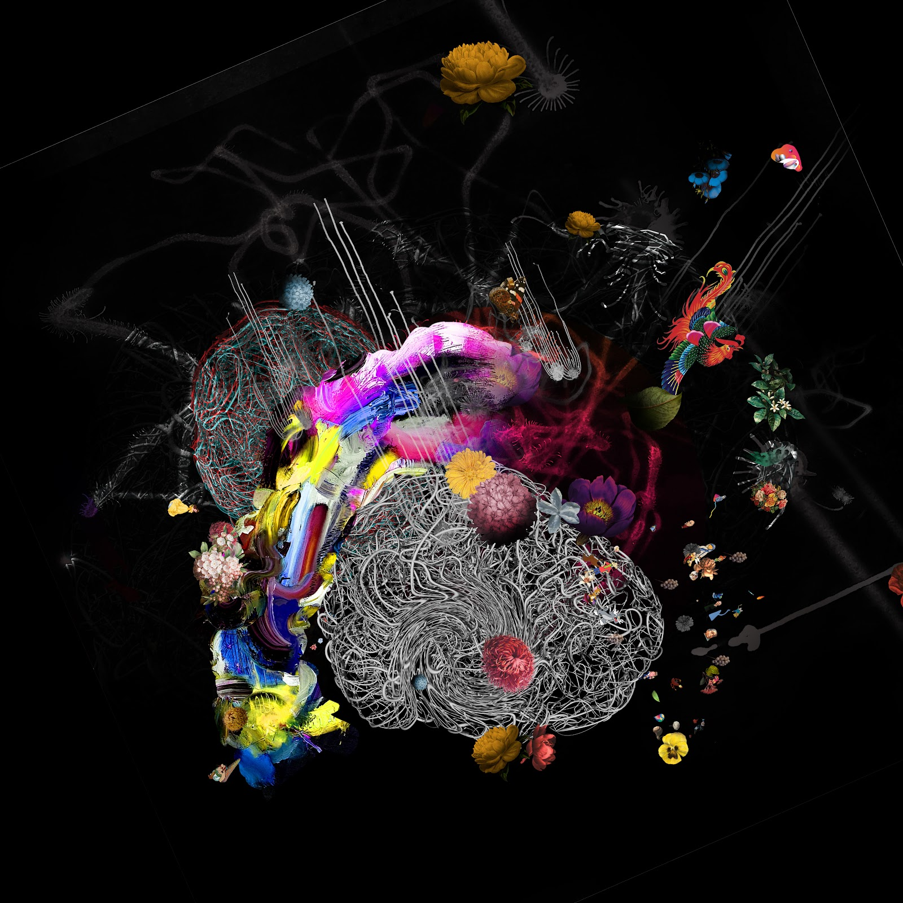
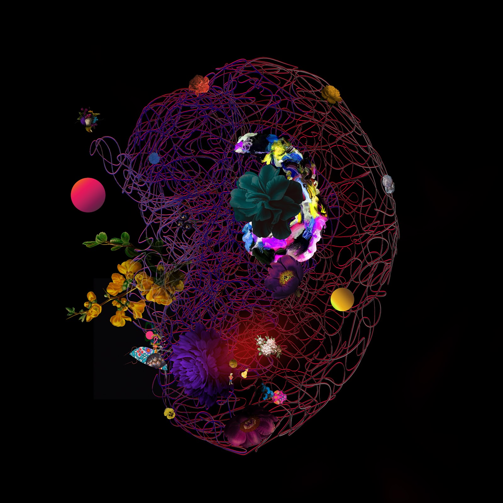
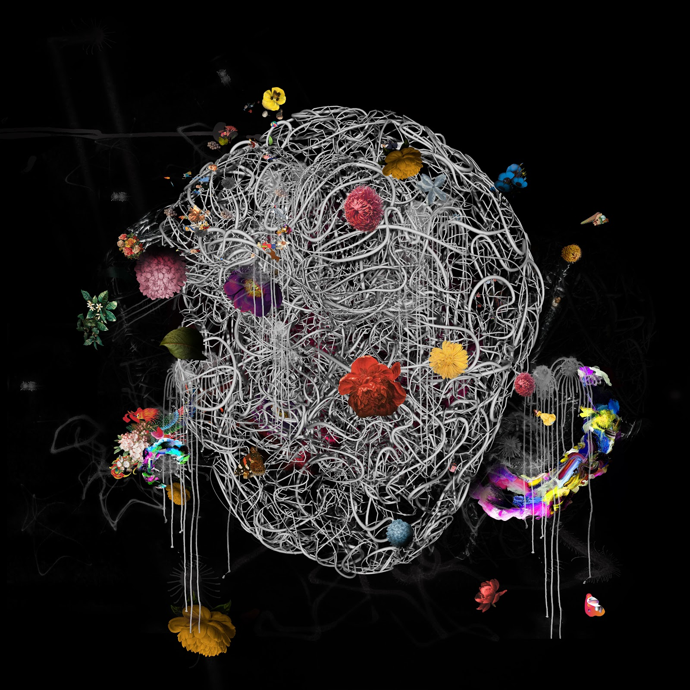
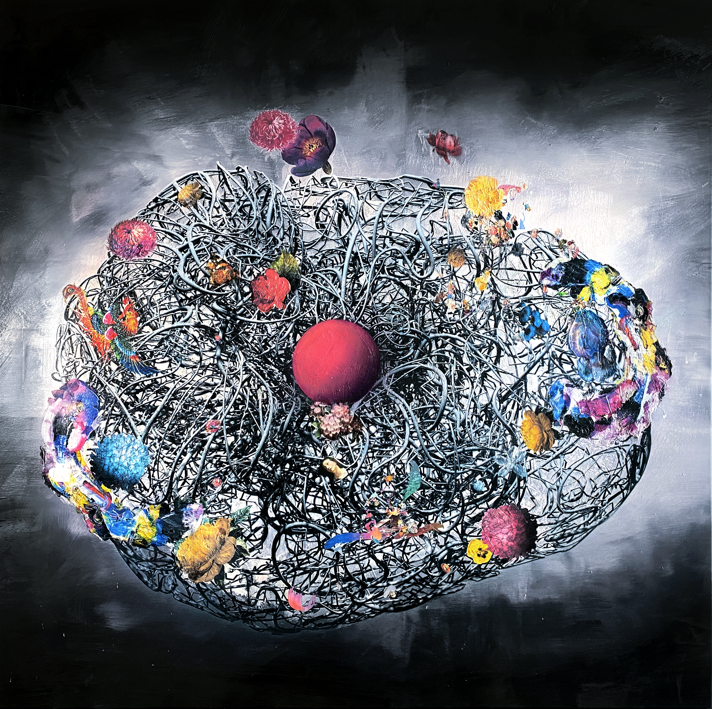
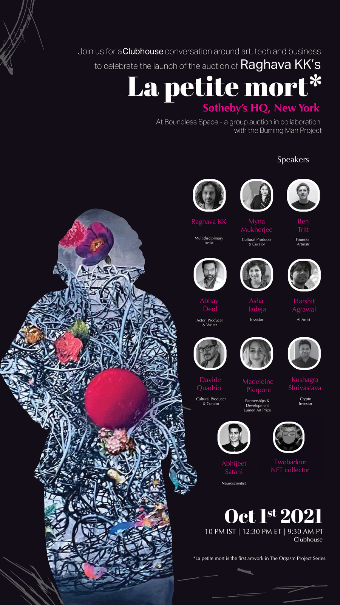
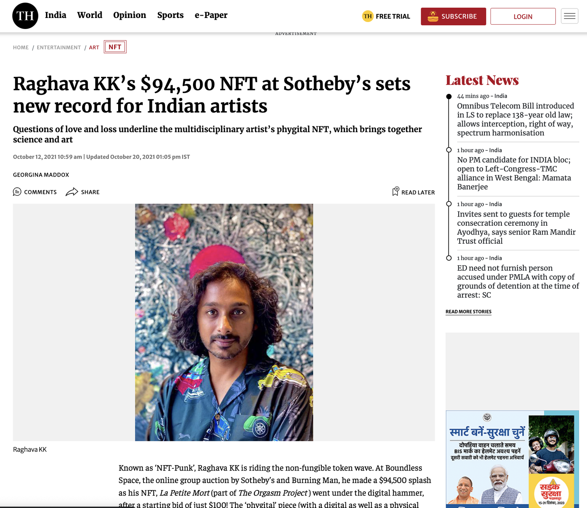
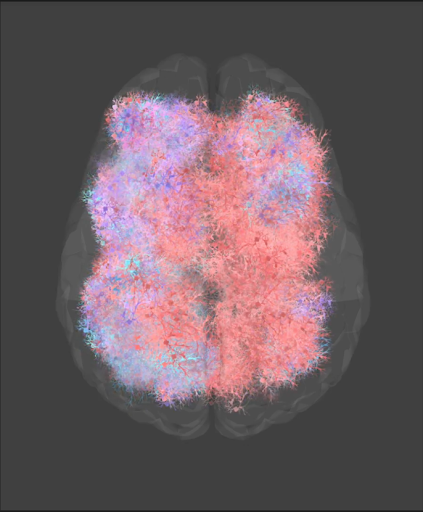

№ 01 · 2021 → 2022
The Orgasm Project
EEG recordings of orgasm turned to oil paint, auctioned at Sotheby's for $94,500.

The Orgasm Project
EEG recordings of orgasm turned to oil paint, auctioned at Sotheby's for $94,500.
A series of EEG-derived paintings made with neuroscientist Abhijeet Satani. One work was auctioned at Sotheby's as an NFT for $94,500.
The brief
Neuroscientist Abhijeet Satani approached the studio with a research question: could the EEG signature of an orgasm be turned into a painting that read as art rather than spectacle.
The process
Volunteers' brain activity was recorded during orgasm using EEG. The signal was fed to the SOZO painting machine (developed in the 2015 ArtMatr collaboration) as input. The machine laid initial passes; the studio finished each canvas by hand. La petite mort I to IV were completed in 2021. The Cyborg Orgasm sequence followed in 2022.
Outcome
One work from the series, titled La Petite Mort, was auctioned at Sotheby's as an NFT for $94,500 in 2021. The signal-to-machine-to-hand pipeline established here has been the studio's working method on every series since.







